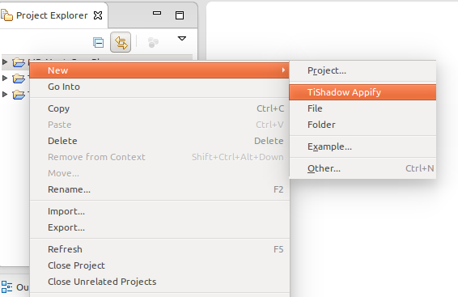

Eclipse (Titanium Studio) Plugin to run TiShadow tests and display results on JUnit View
Installation instructions on http://gzunino.github.io/tishadow-eclipse-plugin/
First you have to "appify" the project you want to test, which will create a new app that is basically the same but with the TiShadow libraries included.

Then, you need to start the TiShadow server in order to access its services. So, do the following:

After that, you need to run the appified project on a device or emulator the same way you would run the original project.
Example: On Genymotion (emulator): 1. Open Genymotion. 2. Start your preferred device. 3. Start the appified project.
Finally, to run the tests, you need to do the following:
2014-06-30: TiShadow Appify option added to the right click menu, under 'New' (Only for Titanium projects).
2014-07-03: Loading indicator added to the run tests functionality. Icons of the TiShadow Toolbar modified. Bug in which Titanium freezes after changing the Tishadow IP preference fixed.
2014-07-04: A button was added to the JUnit perspective to re-run the last TiShadow test configuration.
2014-07-07: A validation was added to run the tests only if there is at least one device connected to the TiShadow server.
2014-07-08: A pulldown menu was added next to the Run TiShadow Tests button on the TiShadow Toolbar, which allows to run any of the existing TiShadow Tests run configurations at any time.
2014-07-10: A TiShadow help file was added to the help contents.
2014-07-11: A Bug in which CPU usage increased considerably when running tests was fixed. Error messages were corrected.
2014-07-15: A progress indicator was added to the TiShadow Appify and App creation. A bug in wich an error message was displayed indicating the lack of the ".project" file was fixed. An option to run the server was added to the 'Server not running' message.
2014-07-29: Launch app option added to the 'no apps connected to the server' error message. A bug in which the parameters field on run configurations wasn't being formed correctly was fixed. A bug about the server button on the toolbar not being updated correctly was fixed.
2014-07-31: A few bugs were fixed, that were related to problems when running tests on ti modules.